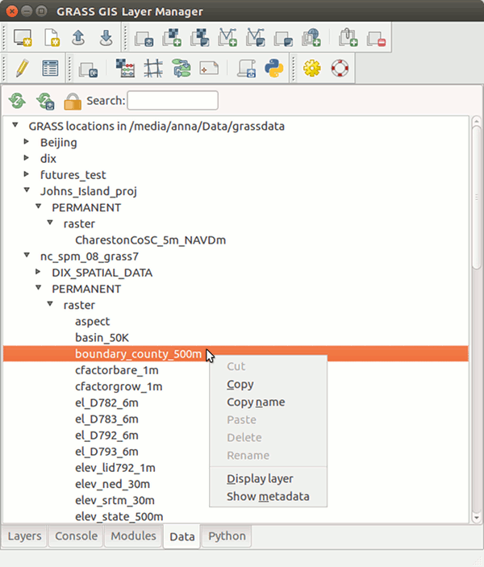

DESCRIPTION
The Data Catalog is a wxGUI component
for browsing, modifying and managing GRASS maps.
Data Catalog allows you to:
- browse GRASS locations and mapsets in the current GIS directory
- browse GRASS 2D/3D raster and vector maps
- rename, copy, move and delete GRASS maps including reprojection between different locations
- drag and drop maps for copying and moving
- searching and fitering maps using regular expressions
- display map in current location
- show metadata of maps

Figure: Data Catalog integrated in wxGUI.
NOTES
Some operations (copying, renaming, deleting) are by default enabled only within the current mapset.
To allow changing data outside of your current mapset, you need to press Unlock button in Data Catalog toolbar.
WARNING
When renaming, copying or deleting maps outside of Data Catalog, you need to reload
the current mapset or entire database, because it is currently not synchronised.
SEE ALSO
wxGUI
wxGUI components
g.copy,
g.rename,
g.remove,
g.list
AUTHOR
Anna Petrasova, NCSU GeoForAll Laboratory
Tereza Fiedlerova, OSGeoREL, Czech Technical University in Prague,
Czech Republic